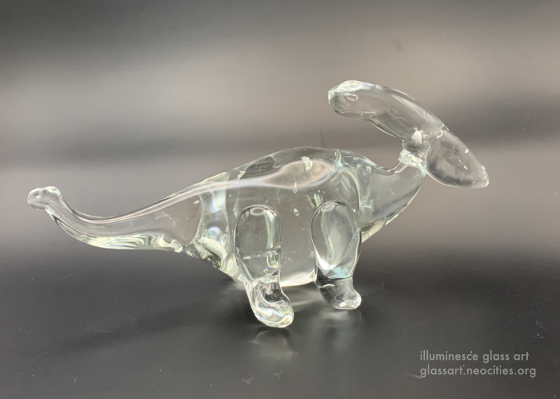

子供の頃から恐竜が好きです。昔の地球で遊んでいた巨大な生き物は、いつも夢で見ました。飼ってみたい、一緒に暮らしてみたい恐竜が、溶かしたガラスでオブジェにイメージをしました。
生活しながら、あなたも恐竜を楽しみさせていただけます。
I have loved dinosaurs since I was a child. I dreamed of these gigantic creatures cavorting happily on our long-ago earth. These dinosaurs that I would like to keep as pets and live together with were imagined into molten glass art.
2023年7月〜現在
July of 2023~Present
